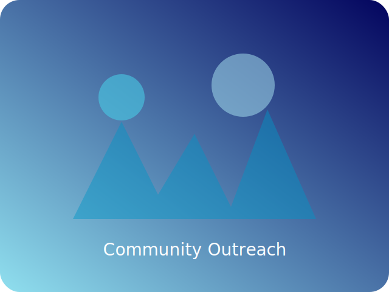
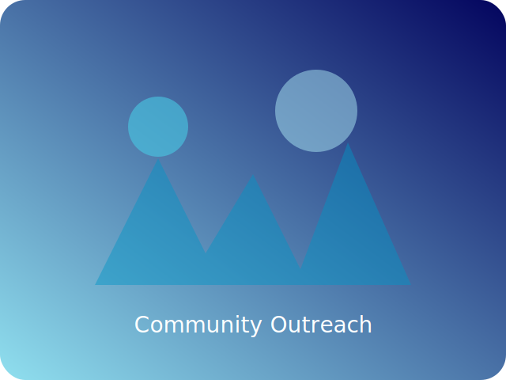

Kesehatan Perempuan Penuh Empati di Setiap Tahap Kehidupan
dr. Dibya Arfianda, SpOG, M.Ked.Klin. menghadirkan dedikasi tulus bagi para ibu, perempuan, dan keluarga di Kediri. Terinspirasi dari kisah ketangguhan yang dibagikan di @dibya.spog, setiap konsultasi memadukan pendekatan berbasis bukti, empati, dan senyuman bersahabat.
Tahun pelayanan medis
Rumah sakit yang dilayani di Kediri
Perawatan ibu & janin menyeluruh

Suara Peduli untuk Kesehatan Perempuan
Saat menyambut buah hati, merencanakan fertilitas, atau menjaga kesehatan perempuan, dr. Dibya selalu mengutamakan kepercayaan. Suasana klinik mencerminkan energi di Instagram: percakapan jujur, arahan yang jelas, dan rasa syukur atas perjalanan setiap keluarga.
Pendekatan Utama
Layanan obstetri berbasis bukti dengan sentuhan personal, memadukan protokol klinis terkini, kemampuan mendengar aktif, dan penguatan spiritual bagi para calon ibu.
Fokus Layanan
- • Pendampingan kehamilan risiko tinggi
- • Pembinaan kebugaran ibu
- • Konseling fertilitas
- • Edukasi kesehatan komunitas
Filosofi Pelayanan
“Setiap pasien berhak atas waktu yang sepenuhnya milik mereka.” Dapatkan penjelasan ringkas, langkah praktis selanjutnya, dan pendampingan berkelanjutan hingga setelah ruang bersalin.
Rumah Sakit & Klinik
Melayani keluarga di seluruh Kediri melalui institusi medis terpercaya dengan kolaborasi tim multidisiplin.
RSIA Melinda Kediri
Pelayanan obstetri dan ginekologi komprehensif, dukungan laktasi, dan pendampingan persalinan ibu & bayi.

RSUD Gambiran Kota Kediri
Rumah sakit rujukan utama Jawa Timur dengan tim PONEK aktif dan perawatan gawat darurat obstetri.

RS Bhayangkara Kediri
Pelayanan SpOG terpadu bagi keluarga TNI/Polri dan masyarakat umum dengan ruang operasi modern.
Momen Galeri
Potret singkat suasana klinik, kegiatan pengabdian masyarakat, dan kisah keluarga inspiratif yang dibagikan dengan izin.

 

Sorotan Akademik
Lulusan Universitas Airlangga dengan kualifikasi spesialis dan magister, dr. Dibya terus berkontribusi dalam diskusi nasional tentang kesehatan maternal, kardiologi pada kehamilan, dan pencegahan stunting.
- • Pembicara dan moderator simposium regional mengenai gangguan hipertensi pada kehamilan.
- • Pembimbing bagi dokter muda selama masa magang dan rotasi residensi.
- • Kontributor program kota untuk meningkatkan skrining antenatal dan nutrisi maternal.
Fokus Kajian Berkelanjutan
Mengintegrasikan konsultasi kardiologi bagi ibu berisiko tinggi dengan penyakit jantung rematik.
Membangun dashboard berbasis data untuk memantau tumbuh kembang setelah persalinan.
Deteksi dini kelainan janin dengan protokol pencitraan terbaru.
Menguatkan pendampingan gaya hidup dan program pemulihan pascapersalinan.
Berita & Pembaruan Terkini
Sorotan dari media sosial, kolaborasi rumah sakit, dan keterlibatan komunitas.
Pelatihan PONEK Terintegrasi
Memimpin lokakarya kesiapan ruang bersalin darurat di RSUD Gambiran, memperkuat respon tim multidisiplin.
Lihat liputan Instagram →Kelas Edukasi Laktasi
Bersama bidan RSIA Melinda, membekali ibu baru dengan teknik menyusui, nutrisi, dan kesehatan mental.
Lihat detail kelas →Penghargaan Audit Stunting
Tim pakar Kota Kediri meraih apresiasi atas penurunan signifikan angka stunting melalui pendampingan keluarga.
Baca selengkapnya →Terhubung
Hubungi kami untuk janji temu, undangan pembicara, atau program kolaborasi seputar kesehatan perempuan.
- WhatsApp: 0822-2950-9661
- Email: nanda.arfianda@gmail.com
- Instagram: @dibya.spog
- Lokasi Praktik Utama: RSIA Melinda, RSUD Gambiran, RS Bhayangkara Kediri
Topik Pembicaraan & Kolaborasi
Seminar tentang kehamilan aman, pemulihan pascapersalinan, dan dukungan pasangan.
Literasi kesehatan reproduksi untuk sekolah dan kelompok masyarakat.
Konsultasi kesiapan PONEK dan protokol keselamatan maternal.
Sesi inspiratif yang memadukan spiritualitas, rasa syukur, dan pelayanan pasien.
Daftar atau Masuk
Buat profil pasien Anda sekarang dan kami akan menyinkronkannya dengan sistem admin praktekdrdibya.com. Pendaftaran email dan integrasi Google SSO segera hadir.
Daftar dengan Email
Masuk
Pratinjau Dasbor Pasien
Dalam waktu dekat, pasien dapat menyinkronkan data mereka dengan portal admin di praktekdrdibya.com. Nikmati pengalaman terpadu yang dirancang dengan mengutamakan privasi dan kejelasan.
Atur jadwal kunjungan, terima pengingat, dan lakukan daftar hadir secara digital.
Catat tonggak kehamilan, unggah hasil USG, dan simpan pertanyaan untuk kunjungan berikutnya.
Akses artikel pilihan, video tips, dan panduan pemulihan pascapersalinan.
Peta Jalan Integrasi
- Fase 1 — Peluncuran halaman depan dan pendaftaran pasien (saat ini).
- Fase 2 — Jembatan API aman ke admin praktekdrdibya.com (dalam pengembangan).
- Fase 3 — Pembaruan real-time, slot telekonsultasi, dan wawasan personal.